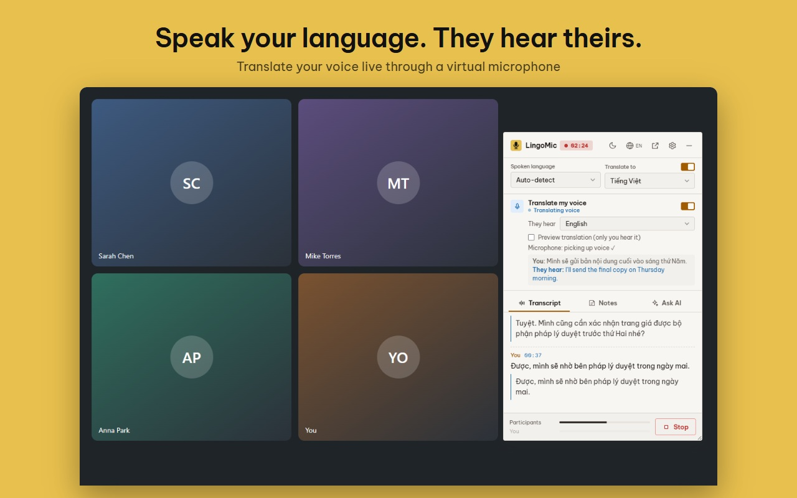
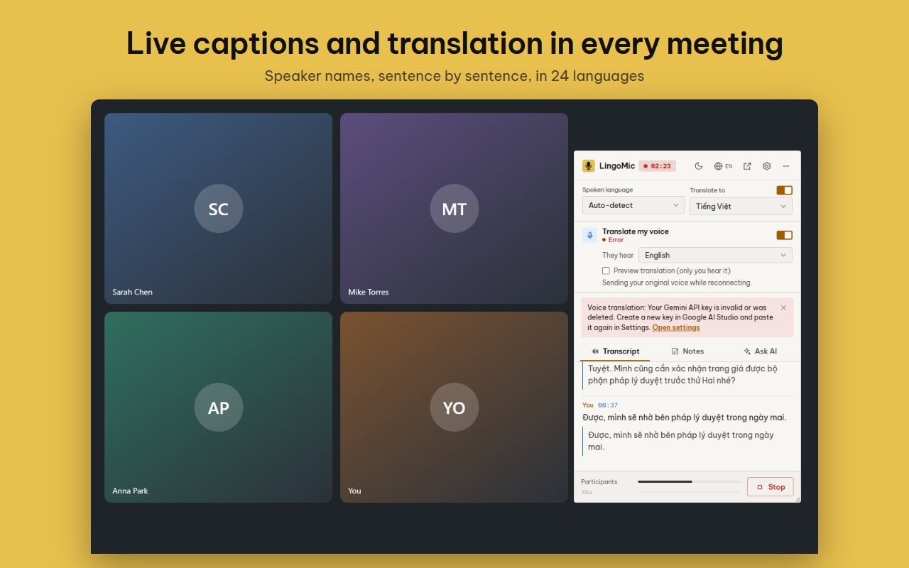
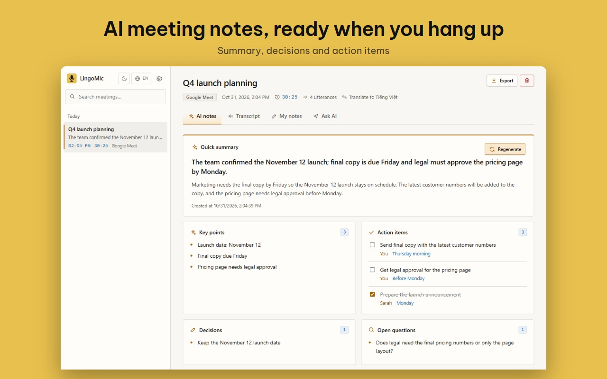
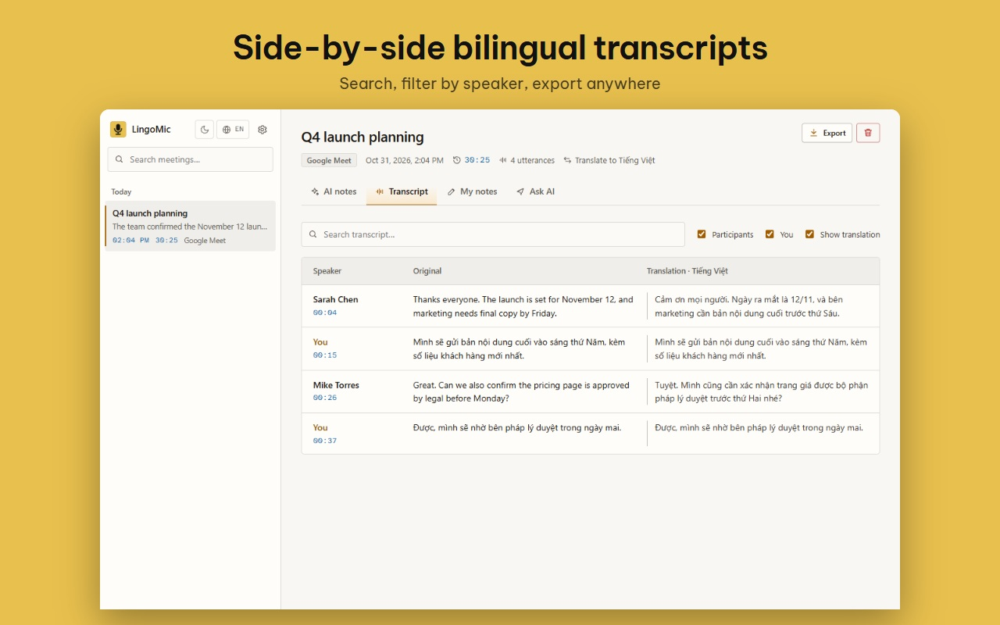

Speak your language. They hear theirs.
LingoMic translates your voice live in Google Meet, Zoom and Microsoft Teams, and transcribes and summarizes your meetings with AI. No bot joins the call.
For Chrome on desktop. Uses your own free Gemini key.

Up and running in three steps
Install the extension
Add LingoMic to Chrome. Nothing else to install, and no bot to invite to your meeting.
Paste a free Gemini key
Create a key in Google AI Studio in about a minute, no payment card needed. LingoMic walks you through it.
Press "Start recording"
In a meeting, click the LingoMic icon or press Alt+Shift+M. Captions, translation and notes appear right away.
Work with colleagues and clients in your own language
Translate your voice
You speak your language and others hear the translated speech through a virtual microphone. Pick the listeners' language and mix in your real voice if you like. About 2–4 seconds of delay.
Live translated captions
Every sentence of the meeting appears with its translation, into 24 languages. Spoken language can be detected automatically.
Know who is speaking
Each line carries the speaker's name on Google Meet, Zoom web and Teams web, instead of "Participant".
AI notes after the meeting
Summary, key points, decisions, action items and open questions, generated automatically when you stop.
Ask AI about the meeting
"What did they just say?", "What do I need to do?", "Draft a follow-up email". Answers are based on the transcript.
Your data stays on your device
Meetings, notes and your API key are stored only in your browser. Audio is not saved. Export to Markdown, TXT or JSON any time.
A look at LingoMic



Pay once, use it for years
Every plan has all features and differs only in length. There are no per-minute fees, because the AI runs on your own Gemini key.
Free trial
- All features
- Starts at your first meeting
- No card needed
6 months
- All features
- Updates for 6 months
- 1 user, 2 browsers
1 year
- All features
- Updates for 1 year
- About $4 a month
Lifetime
- All features
- Updates while the product is maintained
- Pay once, no renewal
Prices in Vietnamese dong are on the Vietnamese page. Refunds: see the refund policy.
Frequently asked questions
Does the Gemini API key cost money?
A key created in Google AI Studio is free and needs no payment card. A key without billing turned on cannot be charged. Google's free tier has per-minute and per-day limits; about 1–2 hours of meetings a day is usually comfortable, and LingoMic tells you clearly when you hit a limit. Google can change its free tier, and LingoMic does not control that.
Where does my meeting audio go?
Audio is sent straight from your browser to Google Gemini, using your key, to be transcribed and translated. LingoMic does not store audio. On the free tier Google may use submitted content to improve its products; if your meetings are confidential, use a paid key. Details in the privacy policy.
Which platforms does it work on?
Google Meet, Zoom (web) and Microsoft Teams (web), in Chrome on desktop. Captions also work on any tab that plays audio.
Do the other participants need to install anything?
No. Only you install LingoMic. With voice translation, others hear the translation as if it were your microphone.
Do I need permission before recording a meeting?
Yes. You are responsible for telling participants before you record or transcribe, and for following the laws and company policies that apply to you. LingoMic reminds you the first time you use it.
Does a bot join my meeting?
No. LingoMic runs in your own browser, so it does not appear in the participant list.
Need help?
Ask a question or report a problem on the support page.